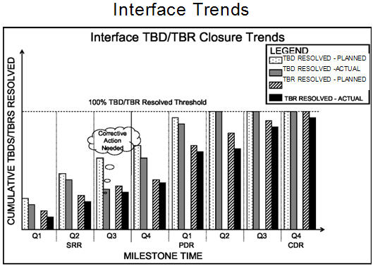

| Example: SE Leading Indicators - Interface Trends (PSM SE) |
 |
|
This indicator is used to evaluate the trends related to growth, change, completeness, and correctness of the definition of system interfaces. This indicator provides insight into the rate of maturity of the system definition against the plan. It also assists in helping to evaluate the stability and adequacy of the interfaces to understand the risks to other activities towards providing required capability, on-time and within budget. The interface trends can also indicate risks of change to and quality of architecture, design, implementation, verification, and validation, as well as potential impact to cost and schedule. An example of how such an indicator might be reported is show below. Refer to the measurement specification in Example: Measurement Specification: Interface Trends (PSM SE) for the details regarding this indicator; the specification includes the general information which would be tailored by each organization to suit its needs and organizational practice.  Interface TBD/TBR Closure Trends. The graph illustrates the actual cumulative number of TBDs and TBRs that have been resolved compared to what is planned to be resolved based on historical data and expectations given the program characteristics. It can be seen that in Q3 after SRR, the actual TBDs are significantly lower than planned and corrective action is then taken. The graph used for the Requirement TBD/TBR Discovery Rate in Example: SE Leading Indicators - Requirements Trend (PSM SE) can also be applied to plot the Interface TBD/TBR trends to indicate the trend for system interface definition and design stability. Refer to Example: Measurement Specification: Interface Trends (PSM SE) for a detailed understanding of this leading indicator. |
| Copyright © 2007 by LAI, INCOSE, PSM, and LEARI (Systems Leading Indicators Guide Copyright) |